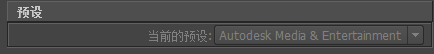
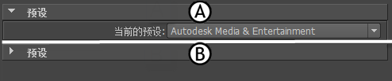
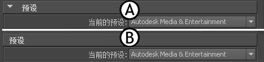

使用“编辑模式”(Edit Mode)选项可以自定义 Maya FBX 插件 UI 预设。
打开“编辑模式”(Edit mode)选项
- 选择、“导出全部”(Export All)或“导出当前选择”(Export Selection) >
 ，然后从“常规选项”(General Options)的“文件类型”(File type)菜单中选择 FBX，并单击“编辑预设”(Edit Preset)以显示“编辑预设”(Edit Preset)对话框。右键单击树视图中的元素以访问“编辑”选项。
，然后从“常规选项”(General Options)的“文件类型”(File type)菜单中选择 FBX，并单击“编辑预设”(Edit Preset)以显示“编辑预设”(Edit Preset)对话框。右键单击树视图中的元素以访问“编辑”选项。
显示/隐藏(Show/Hide)
使用该选项可以激活或禁用 UI 中某个组或选项的可见性。
启用/禁用(Enable/Disable)
使用该选项可以将某个组或选项锁定，以使该组或选项在 UI 中灰显并且无法修改。

展开/收拢(Expand/Collapse)
使用该选项可以更改组或选项在 UI 中的默认显示方式，即，是展开 (A) 还是收拢 (B)。

以可展开组观察/以面板展开观察(View as expandable group/View as expanded Panel)
使用此选项可将组设置为可展开 (A) 或不可展开 (B)。
